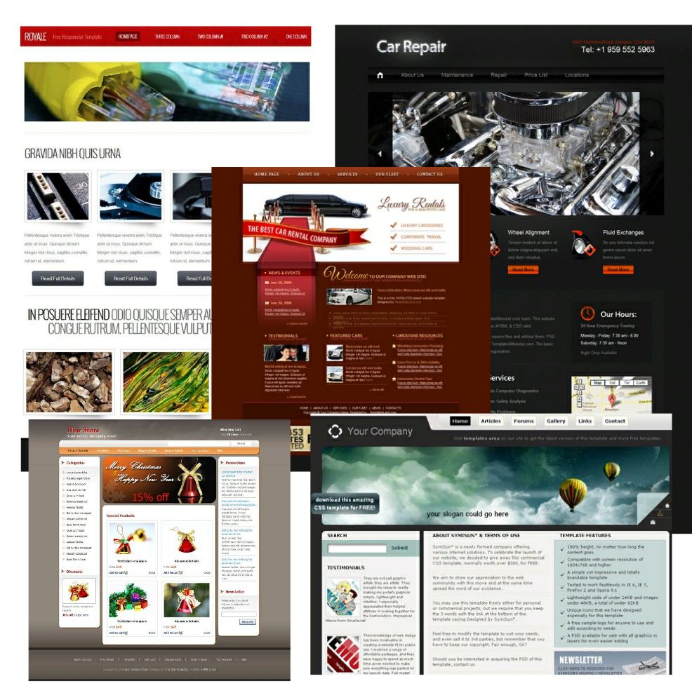
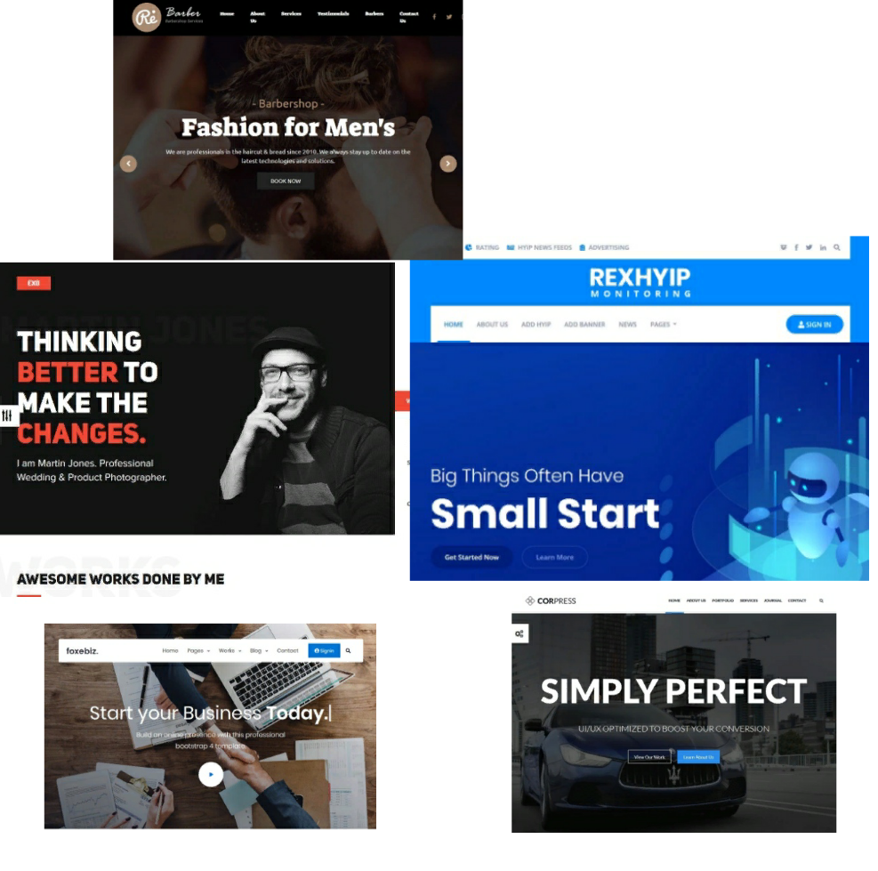

Сайт создан для того что бы показать различные примеры и макеты различных Web-страниц и самое главное научить посетителей создавать/редактировать Web-страницы различными способами, такими как:
- Верстка страницы вручную с 0 до 100%!
- Верстка страницы с помощью адаптивной разметки Bootstrap!
- Верстка страницы с помощью конструкторов сайта таких как Wix U-kit и др

Здесь вы можете посмотреть примеры сайтов написаных вручную с 0% до 100%! В чем же плюсы полного изучения языка гипертекстовой разметки HTML?
➀ Как минимум, то что вы начнете понимать где и в каком месте что нужно изменить то что вам не нравится, а так же как правильно разместить текст, картинку или вообще какой либо блок на странице!
➁ Вы свободно сможете наложить на текст или какие нибудь блоки свои свойства, без каких либо заморочек!
➂ Так же вы с легкостью сможете верстать любые страницы как под один размер так и адаптивные!
Конечно это малость того что вы сможете делать если освоите полностью этот язык, однако мне кажется это довольно таки не плохая мотивция выучить его!
Для перехода к урокам по теме, с некоторыми заданиями и примерами нажмите ⋙ сюда ⋘!
Однако вы можете изучать не полностью язык гипертекстовой разметки HTML, а всего лишь понять как работают классы и разобраться с некоторыми стилями которые я приведу в примере далее...

В этом пункте вы можете увидеть сайты созданные с помощью библиотек Bootstrap! Этот способ подойдет как начинающим Web-программистам, которые знают малость аспектов гипертекстовой разметки, так и программистам которые уже не один год в этой сфере! Плюсы этого способа заключаются в том что:
➀ Он занимает очень мало времени для создания какого либо сайта!
➁ Все библиотеки и классы уже очень красиво настроены, вам остается только правильно разместить все классы по блокам!
➂ Все классы Bootstrap отстроены таким образом, что создавая страницы сайта вы автоматически создаете страницы который удобно просматривать со всех устройств!
Для того что бы начать верстать адаптивные страницы переходите в ⋙ стили Bootstrap ⋘ , и попробуйте наложить несколько стилей! Так же вы можете посмотреть уроки которые я приведу далее, что бы понять как их правильно наложить!
Если вы совсем не хотите заморачиваться и не хотите ничего учить можете попробовать следующий способ...

{kind=link}
{kind=link}
Если вы уж прям совсем ленивый и не хотите вникать в подробности создания сайтов, тогда для вас есть еще один вариант это конструкторы сайтов!
В этом разделе вы можете наблюдать скрины с сайтов сделанных в конструкторах Wix и U-kit! Их плюсы в том что:
➀ Вы создаете сайт в пару кликов!
➁ Все уже сделано вместо вас осталось придумать идею и разместить контент так как вам нужно!
➂ Есть домены и хостинг который сразу может разместить ваш сайт в сети интернет!
Почему я выбрал именно эти сайты? Исключительно только потмоу что считаю их функционал самым удобным и практичным!
Однако, при всех этих плюсах что бы пользоваться полным функционалом конструкторов, нужно заплатить некоторую сумму!
Так же на всех ваших сайтах в конце каждой страницы будет написано где и с помощью чего создан сайт!
{kind=link}
{kind=link}
{kind=link}
Итак, прочитав эту статью вы уже должно быть возможно уже определились каким первым будет ваш сайт! Так что ж давайте воплотим его и начнем изучать язык гипертекстовой разметки HTML! Не забывай выполнять задания которые я буду приводить в конце уроков, а главное честно и не забывай что ты стараешься для себя!
Мне остается пожелать только удачи и упорства в изучении!
Сайт создан студентом первого курса ДГТУ группы ВПИ-12 "февраль 2019 год"